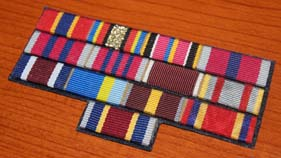
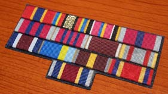

Нагороди СРСР
Порядок носіння орденів і медалей СРСР
Особи, нагороджені орденами і медалями СРСР, можуть носити як самі ці нагороди, так і встановлені до них стрічки.
Правила носіння орденів і медалей СРСР, а також опис і порядок носіння стрічок до них затверджені Указом Президії Верховної Ради СРСР від 19 червня 1943 Порядок носіння орденів і медалей СРСР і стрічок до них, заснованих після видання цього Указу, визначено їх Статутами та Положеннями .
Планки з стрічками до орденів і медалей розташовуються тільки на лівій стороні грудей.
Стрічки до орденів і медалей при носінні їх без орденів і медалей прикріпляються до одягу на лівій стороні грудей. У цьому випадку стрічки натягуються на планочки шириною 24 мм, висотою 8 мм, що представляють собою металеві пластинки, злегка опуклі з лицьового боку і мають на зворотному боці пристосування для прикріплення їх до одягу. Стрічки до кількох орденів і медалей закріплюються на загальній планці з інтервалами між стрічками 3 мм. Інтервали зафарбовуються чорним лаком або покриваються чорною шовковою стрічкою.
Для стрічок до медалі «Золота Зірка» і золотої медалі «Серп і Молот» планок не передбачено, так як без медалей ці стрічки не носяться.
Дві та більше стрічки до орденів і медалей розташовуються на планках справа наліво в наступному порядку:
стрічка до ордена Леніна
стрічка до ордена Жовтневої Революції
стрічка до ордену «Червоний Прапор»
стрічка до ордена Суворова I ступеня
стрічка до ордена Ушакова I ступеня
стрічка до ордена Кутузова I ступеня
стрічка до ордена Нахімова I ступеня
стрічка до ордена Богдана Хмельницького I ступеня
стрічка до ордена Суворова II ступеня
стрічка до ордена Ушакова II ступеня
стрічка до ордена Кутузова II ступеня
стрічка до ордена Нахімова II ступеня
стрічка до ордена Богдана Хмельницького II ступеня
стрічка до ордена Суворова III ступеня
стрічка до ордена Кутузова III ступеня
стрічка до ордена Богдана Хмельницького III ступеня
стрічка до ордена Олександра Невського
стрічка до ордена Вітчизняної війни I ступеня
стрічка до ордена Вітчизняної війни II ступеня
стрічка до ордену «Трудове Червоний Прапор»
стрічка до ордена Дружби народів
стрічка до ордену «Червона Зірка»
стрічка до ордена «За службу Батьківщині в Збройних Силах СРСР» I ступеня
стрічка до ордена «За службу Батьківщині в Збройних Силах СРСР» II ступеня
стрічка до ордена «За службу Батьківщині в Збройних Силах СРСР» III ступеня
стрічка до ордена «Знак Пошани»
стрічка до ордена Слави I ступеня
стрічка до ордена Слави II ступеня
стрічка до ордена Слави III ступеня
стрічка до ордена Трудової Слави I ступеня
стрічка до ордена Трудової Слави II ступеня
стрічка до ордена Трудової Слави III ступеня
стрічка до медалі «За відвагу»
стрічка до медалі Ушакова
стрічка до медалі «За бойові заслуги»
стрічка до медалі «За відзнаку в охороні державного кордону СРСР»
стрічка до медалі «За відмінну службу по охороні громадського порядку»
стрічка до медалі Нахімова
стрічка до ювілейної медалі «XX років Робітничо-Селянської Червоної Армії»
стрічка до медалі «За трудову доблесть»
стрічка до медалі «За трудову відзнаку»
стрічка до ювілейної медалі «За доблесну працю (За військову доблесть). В ознаменування 100-річчя з дня народження Володимира Ілліча Леніна »
стрічка до медалі «За відзнаку у військовій службі» I ступеня
стрічка до медалі «За відзнаку у військовій службі» II ступеня
стрічка до медалі «За відвагу на пожежі»
стрічка до медалі «За порятунок потопаючих»
стрічка до медалі «Партизану Вітчизняної війни» I ступеня
стрічка до медалі «Партизану Вітчизняної війни» II ступеня
стрічка до медалі «За оборону Ленінграда»
стрічка до медалі «За оборону Москви»
стрічка до медалі «За оборону Одесси»
стрічка до медалі «За оборону Севастополя»
стрічка до медалі «За оборону Сталінграда»
стрічка до медалі «За оборону Києва»
стрічка до медалі «За оборону Кавказу»
стрічка до медалі «За оборону Радянського Заполяр'я»
стрічка до медалі «За перемогу над Німеччиною у Великій Вітчизняній війні 1941 - 1945 рр..»
стрічка до ювілейної медалі «Двадцять років перемоги у Великій Вітчизняній війні 1941 - 1945 рр..»
стрічка до медалі «Тридцять років Перемоги у Великій Вітчизняній війні 1941 - 1945 рр..»
стрічка до медалі «За перемогу над Японією»
стрічка до медалі «За взяття Будапешта»
стрічка до медалі «За взяття Кенігсберга»
стрічка до медалі «За взяття Відня»
стрічка до медалі «За взяття Берліна»
стрічка до медалі «За визволення Бєлграда»
стрічка до медалі «За визволення Варшави»
стрічка до медалі «За визволення Праги»
стрічка до медалі «За доблесну працю у Великій Вітчизняній війні 1941 - 1945 рр..»
стрічка до медалі "Ветеран праці"
стрічка до медалі «Ветеран Збройних Сил СРСР»
стрічка до медалі «За відновлення підприємств чорної металургії півдня»
стрічка до медалі «За відбудову вугільних шахт Донбасу»
стрічка до медалі «За освоєння цілинних земель»
стрічка до медалі «За будівництво Байкало-Амурської магістралі»
стрічка до медалі «За перетворення Нечорнозем'я РРФСР»
стрічка до медалі «В пам'ять 800-річчя Москви»
стрічка до медалі «В пам'ять 250-річчя Ленінграда»
стрічка до ювілейної медалі «30 років Радянської Армії і Флоту»
стрічка до ювілейної медалі «40 років Збройних Сил СРСР»
стрічка до ювілейної медалі «50 років Збройних Сил СРСР»
стрічка до ювілейної медалі «60 років Збройних Сил СРСР»
стрічка до ювілейної медалі «50 років радянської міліції»
стрічка до медалі «За бездоганну службу» I ступеня [Медаль заснована наказами МО СРСР, МВД і МГБ для нагородження військовослужбовців за вислугу років. Носіння стрічки медалі дозволено на планці з стрічками орденів і медалей СРСР.]
стрічка до медалі «За бездоганну службу» II ступеня [Медаль заснована наказами МО СРСР, МВД і МГБ для нагородження військовослужбовців за вислугу років. Носіння стрічки медалі дозволено на планці з стрічками орденів і медалей СРСР.]
стрічка до медалі «За бездоганну службу» III ступеня [Медаль заснована наказами МО СРСР, МВД і МГБ для нагородження військовослужбовців за вислугу років. Носіння стрічки медалі дозволено на планці з стрічками орденів і медалей СРСР.]
Стрічки до орденів і медалей, не уміщаються на одній планці, переносяться на другу (третю і т. д.) планку, яка прикріплюється до одягу нижче першої (попередньої) планки.
Планка з стрічкою до ордена «Перемога» розташовується окремо, на 1 см вище всіх інших планок зі стрічками до орденів і медалей. Розмір її 46X8 мм. За участь у бойових діях по звільненню від німецько-фашистських загарбників Польщі, Болгарії, Чехословаччини, Югославії та інших країн Європи, за звільнення від японських імперіалістів Кореї, а також за заслуги у повоєнному співробітництві з дружніми нам країнами соціалізму багато радянські громадяни нагороджені іноземними орденами і медалями.
Порядок носіння іноземних орденів і медалей, а також стрічок до них затверджено Указом Президії Верховної Ради СРСР від 26 червня 1943
Згідно з цим Указом громадяни СРСР, нагороджені іноземними орденами або медалями, при носінні їх одночасно з орденами і медалями СРСР розміщують іноземні нагороди таким чином:
- Іноземні ордени і медалі, що прикріплюються до одягу за допомогою колодочек або стрічок, розташовуються на лівій стороні грудей нагородженого нижче всіх орденів і медалей СРСР;
- Іноземні ордени, що прикріплюються до одягу без колодочек або стрічок (за допомогою штифта і гайки, шпильки і т. п.), розташовуються на правій стороні грудей нагородженого нижче всіх орденів СРСР. Стрічки до іноземних орденів і медалей при носінні їх без самих нагород прикріпляються до одягу нагородженого на лівій стороні грудей на окремій планці, яка розташовується нижче планок зі стрічками до орденів і медалей СРСР.